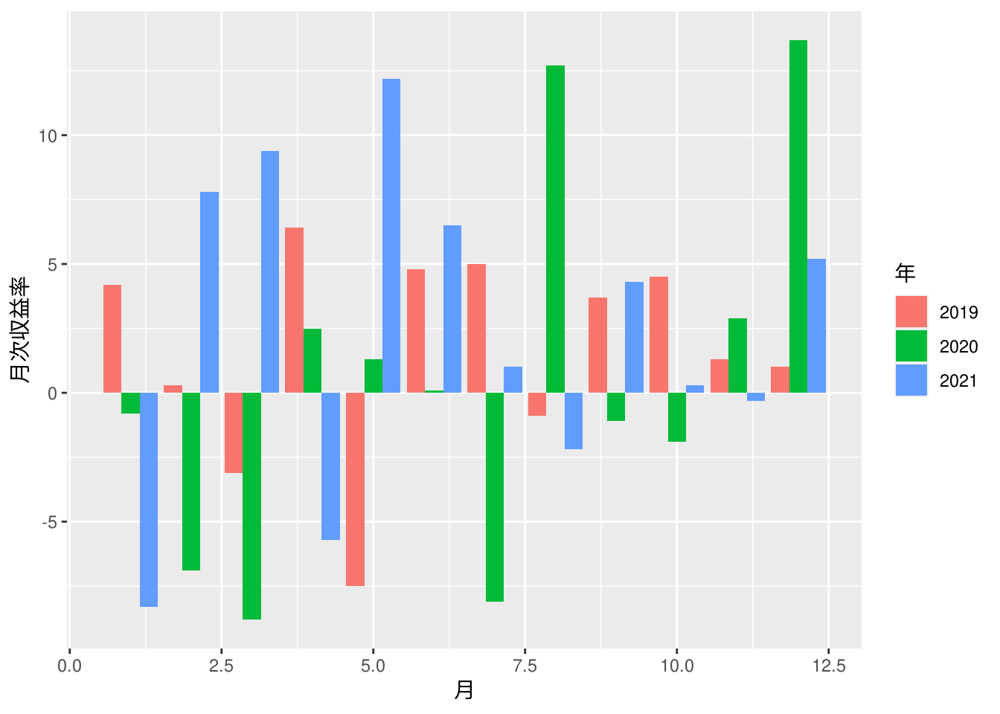

5.1 株の平均収益率とは何か？
株価の変動を利用して得られる収益は「キャピタルゲイン」と呼ばれます。キャピタルゲインを目当てとした株取引で重要になる指標のひとつに「収益率」があります。毎月の終値が前月の終値に対して、値上がった、または、値下がった率を「月次収益率」といいます。「月次平均収益率」は、月次収益率の一年間（十二ヶ月）単位で平均した値になります。
実際に株探というサイトから某社の月次株価一覧を取得して月次平均収益率を計算してみましょう。
サイトから株価データを取得する
library(tidyverse)
library(rvest)
site_url <- "https://kabutan.jp/stock/kabuka?code=7203&ashi=mon&page="
pages <- c(1:5)
xpath <- '//*[@id="stock_kabuka_table"]/table[2]'
stock <- purrr::map2(site_url, pages, ~ paste0(.x, .y)) %>%
purrr::map2_df(pages, .f = function(.x, .y) {
xml2::read_html(.x) %>%
rvest::html_element(xpath = xpath) %>%
rvest::html_table(header = FALSE) %>%
dplyr::slice(-1)
}
)
stock %>%
df_print()
上表の「X7」が月次収益率、月次収益率の十二ヶ月平均が月次平均収益率になりますので、データがそろっている年の月次平均収益率を算出してみます。
月次平均収益率を求める
5.2 平均収益率だけでは、優良な投資かどうかは判断できない
月次平均収益率を求める
月次平均収益率の標準偏差を求める
前節の株探のデータを利用して月次平均収益率と標準偏差を求めます。
実際の株価から月次平均収益率と標準偏差を求める
stock %>%
dplyr::mutate(日付 = lubridate::as_date(X1), 年 = lubridate::year(日付),
月次収益率 = as.numeric(X7)) %>%
dplyr::filter(年 >= 2010 & 年 <= 2021) %>%
dplyr::group_by(年) %>%
dplyr::summarise(月次平均収益率 = mean(月次収益率) %>% round(digits = 2),
標準偏差 = SD(月次収益率) %>% round(digits = 2)) %>%
dplyr::mutate(下 = 月次平均収益率 - 標準偏差, 上 = 月次平均収益率 + 標準偏差) %>%
df_print()
5.3 ボラリティが意味するところ
実際の株価から直近三年の月次収益率の変動を可視化する
stock %>%
dplyr::mutate(日付 = lubridate::as_date(X1), 月次収益率 = as.numeric(X7),
年 = lubridate::year(日付), 月 = lubridate::month(日付)) %>%
dplyr::filter(年 >= 2019 & 年 <= 2021) %>%
dplyr::mutate(年 = as.factor(年)) %>%
ggplot2::ggplot(ggplot2::aes(x = 月, y = 月次収益率, fill = 年)) +
ggplot2::geom_bar(stat = "identity", position = "dodge")